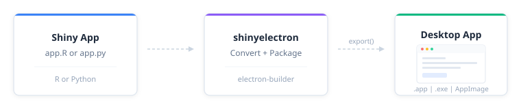

Turn any Shiny app — R or Python — into a standalone desktop application that runs on macOS, Windows, and Linux. No web server, no browser tab, no deployment infrastructure. Just an .app, .exe, or AppImage your users double-click to open.

[!IMPORTANT]
This package is currently in the prototype/experimental stage. It is not yet on CRAN and may have rough edges. Not recommended for production applications at this time.
Install
# install.packages("pak")
pak::pak("coatless-rpkg/shinyelectron")Quick start
library(shinyelectron)
# Check your system
sitrep_shinyelectron()
# Try a bundled demo
export(
appdir = example_app("r-single"),
destdir = "~/Desktop/my-first-app",
run_after = TRUE
)That’s the whole workflow: one call converts your app, wraps it in Electron, builds a distributable, and launches it. Takes about a minute for a small app.
What you can export
shinyelectron supports two app types, autodetected from the contents of your appdir:
-
r-shiny: detected fromapp.Rorui.R+server.R -
py-shiny: detected fromapp.py
Both types work with five runtime strategies for delivering the app to the end user:
| Strategy | What Ships | First Launch | User Needs | Best For |
|---|---|---|---|---|
shinylive |
Electron + WASM bundle | Instant, offline | Nothing | Simple apps; deps that run in WebR or Pyodide (default) |
bundled |
Electron + R/Python runtime | Instant, offline | Nothing | Offline distribution; predictable runtime |
auto-download |
Electron + downloader | Needs internet | Nothing | Public distribution; smaller download |
system |
Electron only | Finds R/Python on PATH | R or Python pre-installed | Internal tools for users who already have R or Python |
container |
Electron + container config | Needs Docker | Docker or Podman | Complex system deps; reproducibility |
shinylive is the default when runtime_strategy is not set. See the Runtime Strategies guide for the full decision matrix.
[!NOTE]
Linux note for
r-shiny: thebundledandauto-downloadstrategies rely on the portable-r project, which currently publishes builds for macOS and Windows only. On Linux, useshinylive,system(the user has R installed), orcontainer(Docker or Podman). Python apps work with all strategies on Linux via python-build-standalone.
Prerequisites
These are required on the build machine (where you run export()). What end users need depends on the runtime strategy: nothing for shinylive, bundled, or auto-download; R or Python pre-installed for system; Docker or Podman for container.
- R (>= 4.4.0)
-
Node.js (>= 22.0.0) — run
install_nodejs()to install locally without admin rights - npm (>= 11.5.0) — included with Node.js
Platform build tools:
| Platform | Requirement |
|---|---|
| macOS | Xcode Command Line Tools |
| Windows | Visual Studio Build Tools |
| Linux |
build-essential (gcc, make) |
[!TIP]
Run
sitrep_shinyelectron()to verify your system is ready before your first export. It checks everything above and tells you what’s missing.
Learn more
- Getting Started — step-by-step tutorial
-
Configuration Guide —
_shinyelectron.ymlreference - Runtime Strategies — bundled vs system vs auto-download vs container
- Multi-App Suites — bundle multiple apps in one shell
- Code Signing — macOS GateKeeper and Windows SmartScreen
- Troubleshooting — common issues and fixes
Acknowledgements
Turning Shiny apps into desktop apps is a problem many people have attacked over the years. shinyelectron stands on the shoulders of prior packaging attempts, community tutorials, and the broader WebR / Pyodide / Electron ecosystems. The list below credits the specific projects whose approaches directly informed this one; we’re grateful to the much larger community of contributors experimenting in this space.
Prior packaging attempts
-
electricShine — R package that streamlines distributable Shiny Electron apps via its
electrify()function; automates Windows builds. -
Photon — RStudio add-in that leverages Electron to build standalone Shiny apps for macOS and Windows by cloning an R-specific
electron-quick-startrepository and including portable R versions. - RInno — standalone R application builder with Electron on Windows.
- DesktopDeployR — alternative framework for deploying self-contained R-based applications with a portable R environment and private package library.
Talks, tutorials, and templates
- UseR! 2018 — Shiny meets Electron by @ksasso demonstrating how to convert Shiny apps into standalone desktop apps.
- Developer tutorials — step-by-step guides from @lawalter and @dirkschumacher on practical integration.
- Zarathu Corporation templates — cross-platform deployment templates for macOS ARM and Windows, summarized in this R-bloggers post.
Upstream projects
- Electron — the desktop framework.
- electron-builder — the packaging pipeline that produces platform installers.
- shinylive (Posit) and WebR — R in WebAssembly, enabling browser-only Shiny apps.
- py-shinylive and Pyodide — the Python equivalents.
-
portable-r — standalone R binaries used by the
bundledandauto-downloadstrategies. - python-build-standalone — standalone Python builds used by the Python strategies.
References
electricShine(R package)RInno(R package)Photon(RStudio Add-in)COVAILelectron-quick-startDesktopDeployR(framework)- Electron ShinyApp Deployment — @ksasso
- How to Make an R Shiny Electron App — @lawalter
- R Shiny and Electron — @dirkschumacher
- Creating Standalone Shiny Apps with Electron on macOS M1
- Creating Standalone Shiny Apps with Electron on Windows — @jhk0530
- Creating Standalone Apps from Shiny with Electron (R-bloggers) — @jhk0530
- Shiny meets Electron (UseR! 2018 talk) (slides and code)
- Electron documentation
- electron-builder documentation
- shinylive (R)
- py-shinylive (Python)
- WebR
- Pyodide
- portable-r (macOS / Windows builds)
- python-build-standalone